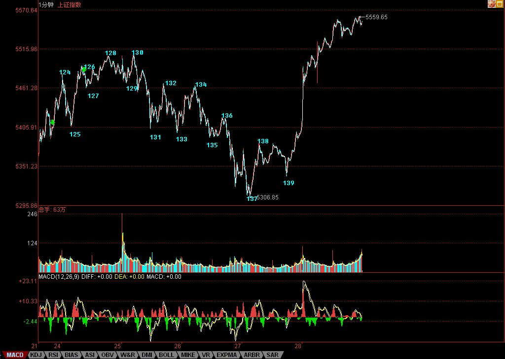

缠中说禅博客
缠中说禅 当代奇人，
一个永远只愿站立且希望探索、
展示人的所有潜能和可能的人，真实身份未明。

资金乘胜追击，破圆顶兵临3/4线
(2007/09/28 15:51:59 周五)
注意，本ID已经说过了，在刀锋上舞蹈阶段，是多空皆杀，那些一根筋思维的人，注定要被杀，目前不被杀只是迟早的问题，某种模式反复后，就是相信这种模式的人的死期。
本ID什么都不相信，市场让本ID看到什么就干什么，这就是本ID理论的唯一中心与基本点。例如下图中，132的第三类卖点后，到137的1分钟完成，走势极端标准完美。有兴趣的可以量一下130-131，与136-137，长度基本相等，而力度上，加一下下面对应的柱子面积就知道该干什么。而到了138，就知道这5分钟的第三类卖点肯定没戏了，就算137没反应，139就提供了一个反应的机会。
当然，站在中枢震荡的角度，并不需要预测后面能走多高，让市场告诉你。而今天的走势，强悍到连一个线段都没破坏过，那该干什么还不是很清楚的事情？
节后的走势，十分清楚，就是首先要完成这个1分钟的离开，从目前的情况看，这1分钟的离开走势是首先是线段的类上涨的可能性太大了，除非有特别的大消息，当线段类上涨结束后，必然形成1分钟中枢，该中枢后，1分钟的走势无论是盘整还是上涨，等1分钟走势完成后，关键是看反抽能否形成前面5分钟中枢的第三类买点了，如果形成，大盘将继续攻击上行，否则就继续向30分钟中枢的震荡陷进去。
好了，上面的分析已经十分明确，对本ID理论有点了解的，都应该明白了。至于不了解的，本ID已经反复说过，中线点的就看5周线，你看，昨天的低点，就刚好在上面，和上次5000点那次一样。
基本面上，很明确地告诉各位，节后最可能出来的消息，就是关于国有股部分划转社保的问题。关于这个消息，本ID和周围的人都有点分歧，这消息意味着，以后卖国有股，就不需要什么通知了，想什么时候卖都可以。但，目前资金充沛，完全有可能出现如此尴尬的事情，就是见一只买一只，全给买光了。毕竟那些国有股都是中字头的，都是中国最好的企业。所以，对这政策的杀伤力，本ID依然表示怀疑。不过，最终要看市场的反应，本ID自己不会有什么太多想法，只关心市场合力本身。
要打跨资金，政策上可能有效的招数有：一、查基金黑幕；二、规定A股流通量不到10%的必须到10%。三、XXXX。
政策必胜，这是无疑的
。但本ID对资金与政策都没兴趣，
本ID唯一感兴趣的，就是利用他们两者斗法所制造的市场机会去多空皆杀。
个股方面，没什么可说的，中字头、题材股，两只蝴蝶继续忽悠着飞。只要掌握好节奏，就是操作的天堂。如果不明白什么叫节奏，请各位做一作业：从日分型到小的级别走势，好好分析一下000938，里面全部都是教科书。
放假了，让股票豆腐去吧。
本ID今晚再写一帖子，明天就要外出腐败腐败了，博客关闭到10月7日。10月8日重新开张。
祝各位过节好。
先下，再见。
